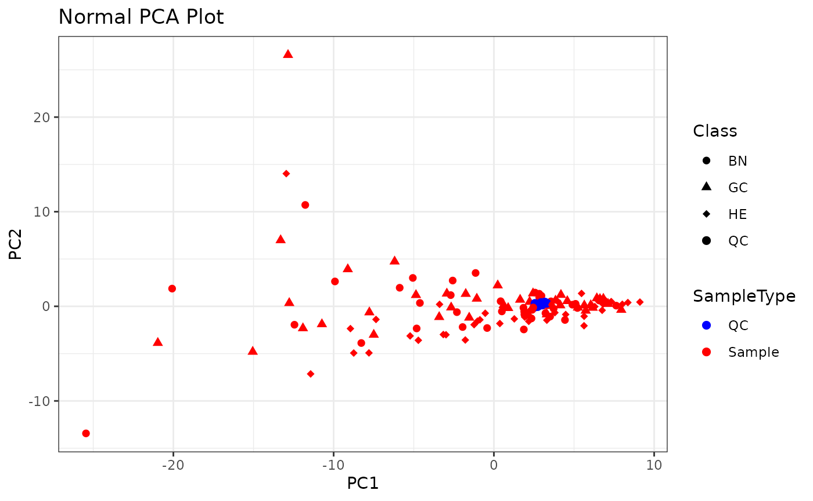
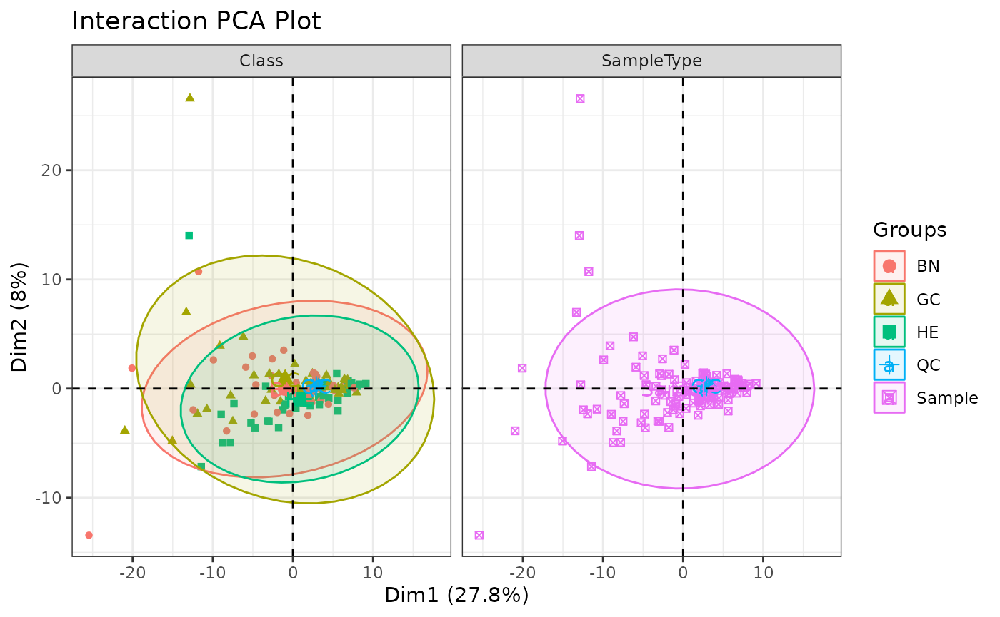

Introduction to MDAW
Dany Mukesha
University of Cote D’Azurdanymukesha@gmail.com Source:
vignettes/Introduction.Rmd
Introduction.RmdAbstract
Metabolomics, the study of small molecules (metabolites) within biological systems, has emerged as a powerful tool for understanding the intricate metabolic processes underlying various physiological and pathological conditions. However, the analysis of metabolomics data presents unique challenges due to its complexity and high dimensionality. In this context, the development of a comprehensive computational framework is essential. This framework should seamlessly integrate various analysis steps, from data preprocessing to advanced statistical modeling, while adhering to best practices in data processing and interpretation. This allows the users to clearly and confidently navigate the intricacies of metabolomics data, enabling in-depth scientific investigation and knowledge expansion.Introduction
The accurate analysis and interpretation of complex data sets is of
utmost importance in order to obtain meaningful biological insights. To
address this issue, a robust computational workflow for statistical
analysis of both untargeted and targeted metabolomics data was
developed. Such a workflow not only ensures the reliability of results,
but also promotes reproducibility in data analysis and reporting -
a fundamental principle for scientific integrity (Resnik
DB. et al., 2016).
This manuscript provides a designed computational workflow developed for the analysis of metabolomics data in binary classification studies. The approach encompasses a range of techniques, including univariate and multivariate statistical analyses, quality control procedures, and visualization tools, all aimed at deciphering the complex metabolic signatures underlying biological phenomena. By providing a structured framework and leveraging state-of-the-art methods enhances the robustness of data analysis in metabolomics.
Outlines
Here are the outlines for MDAW, a workflow for analyzing
metabolomics data, in a binary classification study. Let’s see together
the breakdown steps which consists this workflow:
Importing Data: Start by importing both metabolite and experimental data from an Excel sheet. This step ensures you have all needed information for the analysis.
Pooled QC-based Data Cleaning: Quality control (QC) is important in metabolomics to make sure that data obtained are reliable. Pooled QC samples helps to identify and remove any technical variation or artifacts in the data.
Principal Component Analysis (PCA) Visualization: PCA is a powerful tool for
assessing data quality,identifying outliers, andgaining insights into the overall structure of the data. Visualizing the data using PCA plots help us to detect any clustering or separation between sample groups.Two-Class Univariate Statistics: Perform uni-variate statistical analysis to identify individual metabolites that show significant differences between the two classes (e.g., control vs. treatment). This analysis can involve statistical tests such as
t-testsorANOVA, followed by correction for multiple comparisons if needed.-
Multivariate Analysis with PLS-DA:
Model Optimization (R2 vs. Q2): Optimize the PLS-DA model by assessing the goodness of fit (R2) and predictive ability (Q2) using cross-validation techniques.
Permutation Testing: Validate the PLS-DA model by permutation testing to assess its statistical significance and guard against overfitting.
Model Prediction Metrics: Evaluate the performance of the PLS-DA model using metrics such as accuracy, sensitivity, specificity, and area under the receiver operating characteristic curve (AUC-ROC).
Feature Importance: Identify important metabolites contributing to the classification by examining variable importance in projection (VIP) scores or loading plots.
Model Prediction Data Visualizations: Visualize the results of the PLS-DA model, such as score plots and class prediction plots, to assess the separation between sample groups and the model’s predictive ability.
Exporting Statistical Tables: Export relevant statistical tables summarizing the results of univariate and multivariate analyses to Excel sheets for further examination and reporting.
This workflow should provide a well streamlined computational approach to analyzing metabolomics data in a binary classification study, integrating both univariate and multivariate statistical methods to identify biomarkers and gain insights into biological differences between sample groups.
Case Study
Libraries
Libraries(or Packages) provide functions that extend the basic functionality of the R language. We will need the following tools to analyse the data:
Import data/peak
The chunk code below utilises a function called
MDAW::import_dataXL() to import the Peak and Data sheets
from an Excel file. Once this is done, a notification appears to confirm
that the Peak and Data tables have been loaded from the corresponding
worksheets in the Excel file.
# Theinput file (Excel spreadsheet)
excel_file <- "Gastric_NMR.xlsx"
# The path to the input file (Excel spreadsheet)
path <- system.file("extdata", "Gastric_NMR.xlsx", package = "MDAW")
# The table of Data from an Excel file(data sheet)
table_data <- MDAW::import_dataXL(xlsx_file_name = path, sheet_name = "Data",
interactive_output = FALSE)
#> Loading sheet: Data
#> TOTAL ROWS: 140
#> Done!
# The table of Peak from an Excel file(peak sheet)
table_peak <- MDAW::import_dataXL(xlsx_file_name = path, sheet_name = "Peak")
#> Loading sheet: Peak
#> TOTAL ROWS: 149
#> Done!Load table of data
The data table offers an interactive display feature, allowing to
easily inspect and verify the imported values. This functionality can be
accessed by utilizing the reactable::reactable()
function.
table_data # View and check the table data
#> # A tibble: 140 × 154
#> RowID Idx SampleID SampleType Class M1 M2 M3 M4 M5 M6
#> <chr> <dbl> <chr> <chr> <chr> <dbl> <dbl> <dbl> <dbl> <dbl> <dbl>
#> 1 1 1 sample_1 QC QC 90.1 492. 203. 35 164. 19.7
#> 2 2 2 sample_2 Sample GC 43 526. 130. NA 694. 114.
#> 3 3 3 sample_3 Sample BN 214. 10703. 105. 46.8 483. 152.
#> 4 4 4 sample_4 Sample HE 31.6 59.7 86.4 14 88.6 10.3
#> 5 5 5 sample_5 Sample GC 81.9 259. 315. 8.7 243. 18.4
#> 6 6 6 sample_6 Sample BN 197. 128. 862. 18.7 200. 4.7
#> 7 7 7 sample_7 Sample GC 45.5 190. 32 NA 363. 35.7
#> 8 8 8 sample_8 Sample HE 91 232. 212. 18.2 72.5 6.7
#> 9 9 9 sample_9 Sample GC 481. 470. 60.7 8.4 270. 57.4
#> 10 10 10 sample_10 QC QC 62.2 182. 75.5 36 203. 18.7
#> # ℹ 130 more rows
#> # ℹ 143 more variables: M7 <dbl>, M8 <dbl>, M9 <dbl>, M10 <dbl>, M11 <dbl>,
#> # M12 <dbl>, M13 <dbl>, M14 <dbl>, M15 <dbl>, M16 <dbl>, M17 <dbl>,
#> # M18 <dbl>, M19 <dbl>, M20 <dbl>, M21 <dbl>, M22 <dbl>, M23 <dbl>,
#> # M24 <dbl>, M25 <dbl>, M26 <dbl>, M27 <dbl>, M28 <dbl>, M29 <dbl>,
#> # M30 <dbl>, M31 <dbl>, M32 <dbl>, M33 <dbl>, M34 <dbl>, M35 <dbl>,
#> # M36 <dbl>, M37 <dbl>, M38 <dbl>, M39 <dbl>, M40 <dbl>, M41 <dbl>, …Load table of peaks
The peak table offers an interactive display feature, allowing to easily inspect and verify the imported values.
table_peak |>
reactable::reactable() # View and check the table peak Data Cleansing
Before beginning statistical or machine learning modeling, it is
important to assess the quality of your data and eliminate any
inaccurately measured metabolites. This process ensures the integrity of
your analytics. For this demonstration using the gastric cancer NMR data
set, basic statistical to measure each metabolite are already
calculated, which were then stored in the MDAW::table_peak.
In this file, metabolites are stored in compliance with the following
conditions:
- A QC-RSD (Relative Standard Deviation) below 20%.
- Fewer than 10% of values are absent.
# filter clean metabolite from table_peak
clean_table_peak <- MDAW::clean_table_peak(table = table_peak,
min_QC_RSD = 20,
min_Perc_missing = 20)
#> 52 remaining peaks.PCA (Principal Component Analysis)
To effectively evaluate the quality of the cleaned dataset in a comprehensive manner, it is advisable to conduct a basic Principal Component Analysis (PCA) following appropriate transformation and scaling procedures. The PCA score plot typically categorizes samples by type, such as quality control (QC) or biological sample (Sample). In datasets of high quality, QC samples tend to cluster closely together compared to biological samples, as discussed by Broadhurst et al. in 2018.
Initially, the metabolite data matrix is extracted from the
MDAW::table_data and subjected to transformation and
scaling:
- A new variable, peaklist, is generated to store the names (M1…Mn) of the metabolites intended for subsequent statistical analysis.
- The peak data corresponding to this list for all samples is extracted from the dataTable and organized into a matrix, X.
- The values in X are subjected to a logarithmic transformation (Xlog).
- The
MDAW::scale_data()helper function is employed to scale the logarithmically transformed data (Xscale). - Missing values are imputed using a k-nearest neighbor approach with three neighbors, resulting in the table Xknn.
- The transformed and scaled dataset, Xknn, serves as input for PCA
using the
MDAW::pca_plot()helper function, yielding PCA score and loading plots for interpretation and quality assessment.
list_of_peaks <- clean_table_peak["Name"]
table_data |>
dplyr::select(RowID,
Idx,
SampleID,
SampleType,
Class,
list_of_peaks$Name)
#> # A tibble: 140 × 57
#> RowID Idx SampleID SampleType Class M4 M5 M7 M8 M11 M14
#> <chr> <dbl> <chr> <chr> <chr> <dbl> <dbl> <dbl> <dbl> <dbl> <dbl>
#> 1 1 1 sample_1 QC QC 35 164. 41 46.5 61.7 35.3
#> 2 2 2 sample_2 Sample GC NA 694. 37.9 126. 491. NA
#> 3 3 3 sample_3 Sample BN 46.8 483. 110. 85.1 2441. 29.3
#> 4 4 4 sample_4 Sample HE 14 88.6 170. 23.9 141. 62.9
#> 5 5 5 sample_5 Sample GC 8.7 243. 349. 61.1 48.7 77.8
#> 6 6 6 sample_6 Sample BN 18.7 200. 37.3 244. 104. 52.3
#> 7 7 7 sample_7 Sample GC NA 363. 59.6 51.3 58.1 34.6
#> 8 8 8 sample_8 Sample HE 18.2 72.5 15.3 37.1 54.1 30.3
#> 9 9 9 sample_9 Sample GC 8.4 270. 214. 65.6 92.9 61.9
#> 10 10 10 sample_10 QC QC 36 203. 44.4 48.6 59 28.4
#> # ℹ 130 more rows
#> # ℹ 46 more variables: M15 <dbl>, M25 <dbl>, M26 <dbl>, M31 <dbl>, M32 <dbl>,
#> # M33 <dbl>, M36 <dbl>, M37 <dbl>, M45 <dbl>, M48 <dbl>, M50 <dbl>,
#> # M51 <dbl>, M65 <dbl>, M66 <dbl>, M68 <dbl>, M71 <dbl>, M73 <dbl>,
#> # M74 <dbl>, M75 <dbl>, M88 <dbl>, M89 <dbl>, M90 <dbl>, M91 <dbl>,
#> # M93 <dbl>, M101 <dbl>, M104 <dbl>, M105 <dbl>, M106 <dbl>, M107 <dbl>,
#> # M110 <dbl>, M115 <dbl>, M116 <dbl>, M118 <dbl>, M119 <dbl>, M120 <dbl>, …
data <- table_data |>
select(-c(1:5))
categories <- table_data |>
select(c(4:5))
#Imputate missing values with knn
imputed_data <- data |>
as.matrix() |>
impute::impute.knn()
# Step 2: Perform PCA
pca_result <- prcomp(imputed_data$data, scale. = TRUE)
pca_scores <- as.data.frame(pca_result$x)
# Combine PCA scores with categories for coloring
pca_data <- cbind(pca_scores, categories)
pca_plot <- ggplot2::ggplot(pca_data,
ggplot2::aes(x = PC1, y = PC2,
color = SampleType,
shape = Class)) +
ggplot2::geom_point(size = 2) +
ggplot2::scale_color_manual(values = c("blue", "red")) +
ggplot2::scale_shape_manual(values = c(16, 17, 18, 19)) +
ggplot2::theme_bw() +
ggplot2::labs(title = "Normal PCA Plot", x = "PC1", y = "PC2")
pca_plot
pca_plot <- MDAW::pca_interaction_plot(data = data,
categories = categories)
pca_plot
Univariate Statistics
Gastric Cancer (GC) vs Healthy Controls (HE) - Comparison
table_data_2Class <- table_data |>
dplyr::filter(Class == c("HE", "GC"))
# Reduce data table only to GC and HE class members
pos_outcome <- "GC"
# Calculate basic statistics and create a statistics table.
statsTable <- MDAW::univariate_2class(DataTable = table_data_2Class,
PeakTable = clean_table_peak,
group = 'Class',
posclass = pos_outcome,
parametric = TRUE)
statsTable |>
reactable::reactable()Save to excel file
MDAW::save_to_xlsx(data = statsTable, sheet_name = "statsTable.xlsx")Statistical Methods
Mean and Standard Deviation
The mean (\(\bar{x}\)) and standard deviation (\(\sigma\)) are calculated for each group:
Mean: \[ \bar{x} = \frac{\sum_{i=1}^{n} x_i}{n} \]
Standard Deviation: \[ \sigma = \sqrt{\frac{\sum_{i=1}^{n} (x_i - \bar{x})^2}{n - 1}} \]
Example:
Suppose we have a dataset: [12, 15, 18, 20, 25]
- Calculate the mean:
\[ \bar{x} = \frac{12 + 15 + 18 + 20 + 25}{5} = \frac{90}{5} = 18 \]
- Calculate the standard deviation:
\[ \sigma = \sqrt{\frac{(12-18)^2 + (15-18)^2 + (18-18)^2 + (20-18)^2 + (25-18)^2}{5-1}} \] \[ \sigma = \sqrt{\frac{36 + 9 + 0 + 4 + 49}{4}} = \sqrt{\frac{98}{4}} \approx \sqrt{24.5} \approx 4.95 \]
Confidence Interval
The 95% confidence interval for the mean is calculated using the standard error (\(SE\)):
\[ \text{CI} = \bar{x} \pm (1.96 \times SE) \]
Where, \[ SE = \frac{\sigma}{\sqrt{n}} \]
Example:
Using the previous example where \(\bar{x} = 18\) and \(\sigma \approx 4.95\), and assuming a sample size of \(n = 5\): \[ SE = \frac{4.95}{\sqrt{5}} \approx 2.21 \] \[ \text{CI} = 18 \pm (1.96 \times 2.21) \approx (13.66, 22.34) \]
T-test
The t-test statistic is calculated to compare means between groups.
The formula for the t-test statistic depends on whether the variances are assumed to be equal or unequal.
Example:
Suppose we have two groups with sample means \(\bar{x}_1 = 18\) and \(\bar{x}_2 = 20\), and assuming equal variances: \[ t = \frac{\bar{x}_1 - \bar{x}_2}{\sqrt{\frac{s_1^2}{n_1} + \frac{s_2^2}{n_2}}} \]
Where \(s_1\) and \(s_2\) are the sample standard deviations, and \(n_1\) and \(n_2\) are the sample sizes.
Median and Bootstrap CI
The median and its 95% bootstrap confidence interval are calculated for each group.
Example:
Suppose we have a dataset: [12, 15, 18, 20, 25]
Calculate the median: Since the dataset has an odd number of observations, the median is the middle value, which is 18.
Calculate the bootstrap confidence interval: This involves resampling the dataset with replacement, calculating the median for each resampled dataset, and then finding the 2.5th and 97.5th percentiles of the medians.
Mann-Whitney U Test
The Mann-Whitney U test is used to compare medians between groups.
Example:
Suppose we have two groups with observations:
Group 1: [12, 15, 18, 20, 25]
-
Group 2: [10, 14, 16, 19, 22]
- Rank all the observations together.
- Calculate the sum of ranks for each group.
- Calculate the U statistic for each group.
- Use the U statistics to determine if there is a significant difference between the groups.
Shapiro-Wilk Test
The Shapiro-Wilk test is performed to assess the normality of data distribution.
Example:
Suppose we have a dataset: [12, 15, 18, 20, 25]
- Perform the Shapiro-Wilk test using statistical software or R functions.
- Obtain the test statistic and p-value.
- If the p-value is less than the significance level (e.g., 0.05), reject the null hypothesis and conclude that the data is not normally distributed.
Levene’s Test
Levene’s test is used to assess the equality of variances between groups.
Example:
Suppose we have two groups with observations:
Group 1: [12, 15, 18, 20, 25]
-
Group 2: [10, 14, 16, 19, 22]
- Calculate the absolute deviations from the group means.
- Calculate the mean of the absolute deviations for each group.
- Use these means to calculate the Levene statistic.
- Compare the Levene statistic to a critical value from the F-distribution to determine if the variances are significantly different.Sure, let’s provide full and complete formulas for each statistical method along with examples and their resolving procedures.
Machine Learning
Splitting data into Training and Test sets.
Multivariate predictive models often encounters a challenge of
overfitting, which can compromise their performance. To
mitigate this issue, it’s good practice to divide the source data into
two subsets: a training set and a test set, allowing for independent
evaluation. This approach, advocated by researchers such as
Westerhuis et al. (2008) and
Xia et al. (2012), ensures a more accurate assessment of
model performance. The model is then fine-tuned using the training data
and independently assessed using the test data.
The true effectiveness of the model can only be accurately gauged using the test data. It’s crucial that both the training and test datasets adequately represent the population being studied. A typical approach is to split the data in a 2:1 ratio (⅔ for training, ⅓ for testing) using stratified random sampling. While this step may be omitted for exploratory purposes or with limited sample sizes, caution is warranted when interpreting a model that hasn’t been validated on an independent dataset. Employing techniques like stratified random sampling helps maintain class balance in both training and test sets, a fundamental requirement for reliable model assessment.
In the context of the giventable_data dataframe, which
focuses on a 2-class comparison (GC vs HE), the objective is to
partition this dataframe into a training subset (dataTrain) for model
training and a test set (dataTest) for model evaluation. The data split
is configured so that the test set comprises 25% of the total samples.
This partitioning process is conducted using the ‘train_test_split()’
function from the scikit-learn module.
Ensuring that the sample split is stratified is essential to maintain
balanced class representation in both the training and test sets. To
achieve this, a binary vector indicating stratification group membership
is required. Since the ‘train_test_split()’ function expects binary
(1/0) outcome indicators rather than the GC/HE class labels present in
table_data, the class information for each sample is
converted into a binary list, denoted as ‘Y’, in the provided code
cell.
Y <- MDAW::create_binary_Y(dataTable = table_data_2Class,
classColumn = "Class")
split_data <- MDAW::custom_train_test_split(table_data_2Class, Y,
test_size = 0.25, seed = 123)
#> DataTrain = 30 samples with 15 positive cases.
#> DataTest = 10 samples with 6 positive cases.
dim(split_data$dataTrain)
#> [1] 30 154
dim(split_data$dataTest)
#> [1] 10 154Given the dataset (dataTable2) and a binary outcome list (Y) used for
’ stratification, we employ the train_test_split() function
in the following code cell. Upon creating the training and test sets,
summary output will be displayed:
DataTrain: Consists of 62 samples, including 32 positive cases. DataTest: Comprises 21 samples, with 11 being positive cases. Two new dataframes and two lists are generated:
- dataTrain: Represents the training dataset (dataframe).
- dataTest: Represents the test dataset (dataframe).
- Ytrain: Contains known outcomes for the training dataset.
- Ytest: Contains known outcomes for the test dataset.
Determine optimal number of components for PLS-DA model
The most common approach for identifying the best PLS-DA model setup without risking overfitting involves employing k-fold cross-validation. Specifically tailored to PLS-DA, this entails a systematic search across models with 1 to N latent variables (components). Initially, each PLS-DA setup undergoes training using all available data (XTknn and Ytrain), followed by assessing its predictive performance using the same data, usually by computing the coefficient of determination R^2. This yields N evaluation scores (\(R^2_1\), \(R^2_2\), …, \(R^2_N\)). Subsequently, the training data is partitioned into k equally sized subsets (folds). For every PLS-DA configuration, k models are constructed, where each model is trained on k−1 folds, and the remaining 1-fold is utilized for model evaluation, recording the model predictions. This process ensures that each fold is held-out exactly once after k models. The model’s general predictive ability is then gauged by comparing these held-out model predictions to the anticipated classification (cross-validated coefficient of determination \(Q^2\)), yielding N cross-validated evaluation scores (\(Q^2_1\), \(Q^2_2\), …, \(Q^2_N\)). Plotting the values of R^2 and Q^2 against the model’s complexity (number of latent variables) typically reveals an initial rise and subsequent decline in \(Q^2\). The point where Q^2 starts to deviate from R^2 signifies the optimal number of components, indicating a balance between model complexity and overfitting.
In this section, we conduct 5-fold cross-validation using the previously established training set (dataTrain) to ascertain the ideal number of components for our PLS-DA model.
Firstly, in the following cell, we preprocess and standardize the training data in dataTrain, employing the same techniques as in the previous section for PCA quality assessment (log-transformation, scaling, and k-nearest-neighbour imputation of missing values).
data
#> # A tibble: 140 × 149
#> M1 M2 M3 M4 M5 M6 M7 M8 M9 M10 M11 M12
#> <dbl> <dbl> <dbl> <dbl> <dbl> <dbl> <dbl> <dbl> <dbl> <dbl> <dbl> <dbl>
#> 1 90.1 492. 203. 35 164. 19.7 41 46.5 17.3 107. 61.7 75.3
#> 2 43 526. 130. NA 694. 114. 37.9 126. 57.8 NA 491. 203.
#> 3 214. 10703. 105. 46.8 483. 152. 110. 85.1 238. 48 2441. 100
#> 4 31.6 59.7 86.4 14 88.6 10.3 170. 23.9 NA NA 141. 12.6
#> 5 81.9 259. 315. 8.7 243. 18.4 349. 61.1 12.2 72.9 48.7 57.3
#> 6 197. 128. 862. 18.7 200. 4.7 37.3 244. 293. 113. 104. 117.
#> 7 45.5 190. 32 NA 363. 35.7 59.6 51.3 NA 60.1 58.1 97.8
#> 8 91 232. 212. 18.2 72.5 6.7 15.3 37.1 22.7 47.8 54.1 26.9
#> 9 481. 470. 60.7 8.4 270. 57.4 214. 65.6 59.5 149. 92.9 65.6
#> 10 62.2 182. 75.5 36 203. 18.7 44.4 48.6 47.2 154. 59 82.2
#> # ℹ 130 more rows
#> # ℹ 137 more variables: M13 <dbl>, M14 <dbl>, M15 <dbl>, M16 <dbl>, M17 <dbl>,
#> # M18 <dbl>, M19 <dbl>, M20 <dbl>, M21 <dbl>, M22 <dbl>, M23 <dbl>,
#> # M24 <dbl>, M25 <dbl>, M26 <dbl>, M27 <dbl>, M28 <dbl>, M29 <dbl>,
#> # M30 <dbl>, M31 <dbl>, M32 <dbl>, M33 <dbl>, M34 <dbl>, M35 <dbl>,
#> # M36 <dbl>, M37 <dbl>, M38 <dbl>, M39 <dbl>, M40 <dbl>, M41 <dbl>,
#> # M42 <dbl>, M43 <dbl>, M44 <dbl>, M45 <dbl>, M46 <dbl>, M47 <dbl>, …In stage of implementation…
Session Info
sessioninfo::session_info()
#> ─ Session info ───────────────────────────────────────────────────────────────
#> setting value
#> version R version 4.3.3 (2024-02-29)
#> os Ubuntu 22.04.4 LTS
#> system x86_64, linux-gnu
#> ui X11
#> language en
#> collate C.UTF-8
#> ctype C.UTF-8
#> tz UTC
#> date 2024-03-14
#> pandoc 3.1.11 @ /opt/hostedtoolcache/pandoc/3.1.11/x64/ (via rmarkdown)
#>
#> ─ Packages ───────────────────────────────────────────────────────────────────
#> package * version date (UTC) lib source
#> abind 1.4-5 2016-07-21 [1] RSPM
#> backports 1.4.1 2021-12-13 [1] RSPM
#> broom 1.0.5 2023-06-09 [1] RSPM
#> bslib 0.6.1 2023-11-28 [1] RSPM
#> cachem 1.0.8 2023-05-01 [1] RSPM
#> car 3.1-2 2023-03-30 [1] RSPM
#> carData 3.0-5 2022-01-06 [1] RSPM
#> caret 6.0-94 2023-03-21 [1] RSPM
#> cellranger 1.1.0 2016-07-27 [1] RSPM
#> class 7.3-22 2023-05-03 [3] CRAN (R 4.3.3)
#> cli 3.6.2 2023-12-11 [1] RSPM
#> codetools 0.2-19 2023-02-01 [3] CRAN (R 4.3.3)
#> colorspace 2.1-0 2023-01-23 [1] RSPM
#> crosstalk 1.2.1 2023-11-23 [1] RSPM
#> data.table 1.15.2 2024-02-29 [1] RSPM
#> desc 1.4.3 2023-12-10 [1] RSPM
#> digest 0.6.35 2024-03-11 [1] RSPM
#> dplyr * 1.1.4 2023-11-17 [1] RSPM
#> ellipsis 0.3.2 2021-04-29 [1] RSPM
#> evaluate 0.23 2023-11-01 [1] RSPM
#> factoextra 1.0.7 2020-04-01 [1] RSPM
#> fansi 1.0.6 2023-12-08 [1] RSPM
#> farver 2.1.1 2022-07-06 [1] RSPM
#> fastmap 1.1.1 2023-02-24 [1] RSPM
#> foreach 1.5.2 2022-02-02 [1] RSPM
#> fs 1.6.3 2023-07-20 [1] RSPM
#> future 1.33.1 2023-12-22 [1] RSPM
#> future.apply 1.11.1 2023-12-21 [1] RSPM
#> generics 0.1.3 2022-07-05 [1] RSPM
#> ggplot2 * 3.5.0 2024-02-23 [1] RSPM
#> ggpubr 0.6.0 2023-02-10 [1] RSPM
#> ggrepel 0.9.5 2024-01-10 [1] RSPM
#> ggsignif 0.6.4 2022-10-13 [1] RSPM
#> globals 0.16.3 2024-03-08 [1] RSPM
#> glue 1.7.0 2024-01-09 [1] RSPM
#> gower 1.0.1 2022-12-22 [1] RSPM
#> gtable 0.3.4 2023-08-21 [1] RSPM
#> hardhat 1.3.1 2024-02-02 [1] RSPM
#> highr 0.10 2022-12-22 [1] RSPM
#> htmltools 0.5.7 2023-11-03 [1] RSPM
#> htmlwidgets 1.6.4 2023-12-06 [1] RSPM
#> impute 1.76.0 2023-10-24 [1] Bioconductor
#> ipred 0.9-14 2023-03-09 [1] RSPM
#> iterators 1.0.14 2022-02-05 [1] RSPM
#> jquerylib 0.1.4 2021-04-26 [1] RSPM
#> jsonlite 1.8.8 2023-12-04 [1] RSPM
#> knitr 1.45 2023-10-30 [1] RSPM
#> labeling 0.4.3 2023-08-29 [1] RSPM
#> lattice 0.22-5 2023-10-24 [3] CRAN (R 4.3.3)
#> lava 1.8.0 2024-03-05 [1] RSPM
#> lifecycle 1.0.4 2023-11-07 [1] RSPM
#> listenv 0.9.1 2024-01-29 [1] RSPM
#> lubridate 1.9.3 2023-09-27 [1] RSPM
#> magrittr 2.0.3 2022-03-30 [1] RSPM
#> MASS 7.3-60.0.1 2024-01-13 [3] CRAN (R 4.3.3)
#> Matrix 1.6-5 2024-01-11 [3] CRAN (R 4.3.3)
#> MDAW * 0.99.0 2024-03-14 [1] local
#> memoise 2.0.1 2021-11-26 [1] RSPM
#> ModelMetrics 1.2.2.2 2020-03-17 [1] RSPM
#> munsell 0.5.0 2018-06-12 [1] RSPM
#> nlme 3.1-164 2023-11-27 [3] CRAN (R 4.3.3)
#> nnet 7.3-19 2023-05-03 [3] CRAN (R 4.3.3)
#> parallelly 1.37.1 2024-02-29 [1] RSPM
#> pillar 1.9.0 2023-03-22 [1] RSPM
#> pkgconfig 2.0.3 2019-09-22 [1] RSPM
#> pkgdown 2.0.7 2022-12-14 [1] any (@2.0.7)
#> plyr 1.8.9 2023-10-02 [1] RSPM
#> pROC 1.18.5 2023-11-01 [1] RSPM
#> prodlim 2023.08.28 2023-08-28 [1] RSPM
#> purrr 1.0.2 2023-08-10 [1] RSPM
#> R6 2.5.1 2021-08-19 [1] RSPM
#> ragg 1.3.0 2024-03-13 [1] RSPM
#> Rcpp 1.0.12 2024-01-09 [1] RSPM
#> reactable * 0.4.4 2023-03-12 [1] RSPM
#> reactR 0.5.0 2023-10-11 [1] RSPM
#> readxl 1.4.3 2023-07-06 [1] RSPM
#> recipes 1.0.10 2024-02-18 [1] RSPM
#> reshape2 1.4.4 2020-04-09 [1] RSPM
#> rlang 1.1.3 2024-01-10 [1] RSPM
#> rmarkdown 2.26 2024-03-05 [1] RSPM
#> rpart 4.1.23 2023-12-05 [3] CRAN (R 4.3.3)
#> rstatix 0.7.2 2023-02-01 [1] RSPM
#> sass 0.4.8 2023-12-06 [1] RSPM
#> scales 1.3.0 2023-11-28 [1] RSPM
#> sessioninfo * 1.2.2 2021-12-06 [1] RSPM
#> stringi 1.8.3 2023-12-11 [1] RSPM
#> stringr 1.5.1 2023-11-14 [1] RSPM
#> survival 3.5-8 2024-02-14 [3] CRAN (R 4.3.3)
#> systemfonts 1.0.6 2024-03-07 [1] RSPM
#> textshaping 0.3.7 2023-10-09 [1] RSPM
#> tibble 3.2.1 2023-03-20 [1] RSPM
#> tidyr 1.3.1 2024-01-24 [1] RSPM
#> tidyselect 1.2.1 2024-03-11 [1] RSPM
#> timechange 0.3.0 2024-01-18 [1] RSPM
#> timeDate 4032.109 2023-12-14 [1] RSPM
#> utf8 1.2.4 2023-10-22 [1] RSPM
#> vctrs 0.6.5 2023-12-01 [1] RSPM
#> withr 3.0.0 2024-01-16 [1] RSPM
#> writexl 1.5.0 2024-02-09 [1] RSPM
#> xfun 0.42 2024-02-08 [1] RSPM
#> yaml 2.3.8 2023-12-11 [1] RSPM
#>
#> [1] /home/runner/work/_temp/Library
#> [2] /opt/R/4.3.3/lib/R/site-library
#> [3] /opt/R/4.3.3/lib/R/library
#>
#> ──────────────────────────────────────────────────────────────────────────────